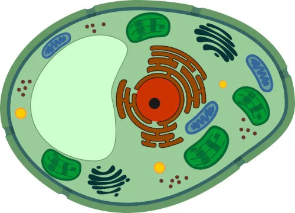

Ahora que entendemos la estructura y las funciones básicas de la célula animal, es interesante notar que también alberga varias curiosidades que la hacen aún más fascinante. Algunos detalles van más allá de lo que aprendemos en los libros y muestran cuán compleja y sorprendente es la vida celular. Echa un vistazo:
Ahora que has aprendido más sobre las células animales, ¿qué te parece realizar un cuestionario rápido y sencillo para poner a prueba tus nuevos conocimientos? (La clave de respuestas está al final de la página).
Con respecto a la célula animal, marca la alternativa incorrecta.
(a) La célula animal, como todos los tipos celulares, tiene membrana plasmática y citoplasma.
(b) La célula animal es una célula eucariota; por lo tanto, tiene núcleo y orgánulos membranosos, como el cloroplasto.
(c) La célula animal tiene lisosomas, un orgánulo relacionado con la digestión intracelular.
(d) La célula animal se diferencia de la célula bacteriana por tener, por ejemplo, orgánulos celulares, como las mitocondrias.
(e) Como en todos los tipos de células, en la célula animal, la membrana plasmática proporciona permeabilidad selectiva, controlando lo que entra y lo que sale de la célula.
Todas las estructuras descritas a continuación se pueden observar en una célula animal, excepto:
(a) Mitocondria
(b) Lisosoma
(c) Ribosoma
(d) Plástido
(e) Aparato de Golgi
¿Qué orgánulo celular se encuentra solo en las células animales?
(a) Mitocondria
(b) Ribosoma
(c) Lisosoma
(d) Cloroplasto
(e) Aparato de Golgi
Respecto a la célula animal, marque la alternativa Afirmación incorrecta:
(a) La célula animal es un tipo de célula eucariota.
(b) La célula animal no tiene cloroplastos, una estructura típica de las células vegetales.
(c) Las células animales tienen orgánulos rodeados de membrana, como las mitocondrias, que son responsables del proceso de respiración celular.
(d) Los centriolos, los peroxisomas, el retículo endoplasmático y los lisosomas son orgánulos presentes en las células animales.
(e) La pared celular de celulosa no se encuentra en todos los tipos de células animales; solo se encuentra en las células de la piel, que requieren mayor resistencia.
En un examen de biología, un estudiante se encontró con la siguiente figura:

Al analizar el dibujo, el estudiante concluyó que no es una célula animal, porque la célula de arriba:
(a) no tiene pared celular.
(b) es eucariota.
(c) tiene características típicas de una célula vegetal, como cloroplastos y una vacuola central.
(d) tiene características que la indican como una célula procariota fotosintética, ya que tiene cloroplastos.
(e) no tiene características exclusivas de las células animales, como mitocondrias y retículo endoplasmático.